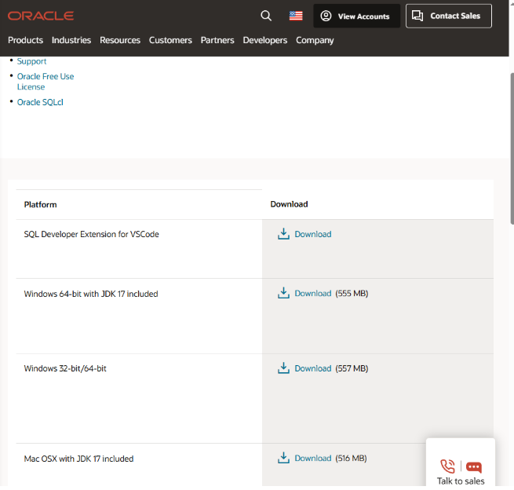
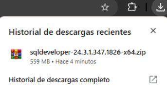

Descargue la versión Windows 64-bit with JDK 17 included desde el siguiente enlace:
 Extraiga el contenido del archivo descargado y ejecute sqldeveloper.exe. Seleccione "No" cuando se le pregunte si desea importar configuraciones previas.
Abra SQL Developer, haga clic en "Nueva conexión" e ingrese:
Haga clic en "Conectar" para finalizar la configuración.